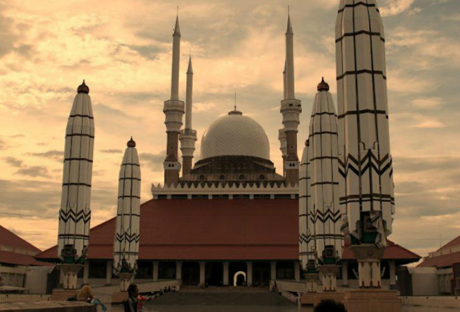

Masjid Agung Jawa Tengah
Masjid Agung Jawa Tengah merupakan salah satu masjid termegah di Indonesia. Masjid dengan arsitektur indah ini mulai dibangun pada tahun 2001 dan selesai pada tahun 2006. Kompleks masjid terdiri dari bangunan utama seluas 7.669 m2 dan halaman seluas 7.500 m2. Masjid Agung Jawa Tengah terletak di jalan Gajah Raya, tepatnya di Desa Sambirejo, Kecamatan Gayamsari, Kota Semarang.
Masjid yang mampu menampung jamaah tak kurang dari 15.000 ini diresmikan oleh Presiden Republik Indonesia, Susilo Bambang Yudhoyono, pada tahun 2006. Upacara peresmian ditandai dengan penandatanganan batu prasasti setinggi 3,2 m dan berat 7,8 ton yang terletak di depan masjid. Prasasti terbuat dari batu alam yang berasal dari lereng Gunung Merapi.

Selain sebagai tempat ibadah, Masjid Agung Jawa Tengah juga merupakan obyek wisataterpadu pendidikan, religi, pusat pendidikan, dan pusat aktivitas syiar Islam. Dengan berkunjung ke masjid ini, pengunjung dapat melihat keunikan arsitektur masjid yang merupakan perpaduan antara arsitektur Jawa, Roma dan Arab.
Arsitektur Jawa terlihat pada beberapa bagian, misalnya pada bagian dasar tiang masjid menggunakan motif batik seperti tumpal, untu walang, kawung, dan parang-parangan. Ciriarsitektur Timur Tengah (Arab) terliat pada dinding masjid dinding masjid yang berhiaskan kaligrafi. Selain itu, di halaman Masjid Agung Jawa Tengah terdapat 6 payung hidrolik raksasa yang dapat membuka dan menutup secara otomatis yang merupakan adopsi arsitektur bangunan Masjid Nabawi yang terdapat di Kota Madinah. Masjid ini juga sedikit dipengaruhi gaya arsitektur Roma. Gaya itu nampak pada desain interior dan lapisan warna yang melekat pada sudut-sudut bangunan.

Keistimewaan lain masjid ini berupa Menara Asmaul Husna (Al Husna Tower) dengan ketinggian 99 m. Menara yang dapat dilihat dari radius 5 km ini terletak di pojok barat daya masjid. Menara tersebut melambangkan kebesaran dan kemahakuasaan Allah. Dipuncak menara dilengkapi teropong pandang. Dari tempat ini pengunjung dapat menikmati udara yang segar sambil melihat indahnya Kota Semarang dan kapal-kapal yang sedang berlalu-lalang di pelabuhan Tanjung Emas.
Copyright © 2013 DINHUBKOMINFO - Pemerintah Prov. Jawa Tengah. All rights reserved. Developed by : Sera Vika Eviana - 672018025